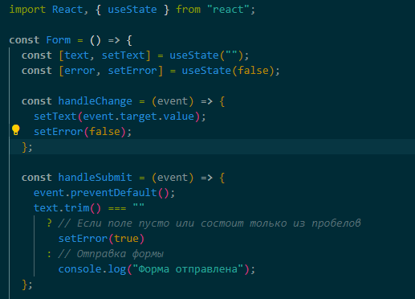
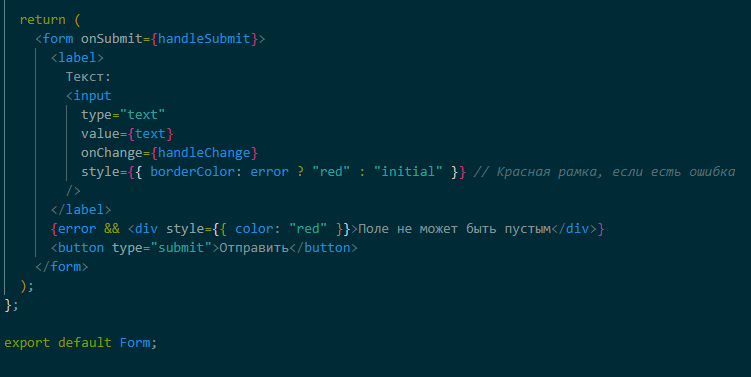
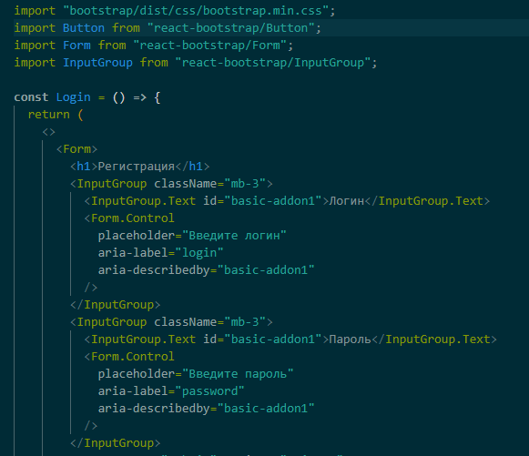
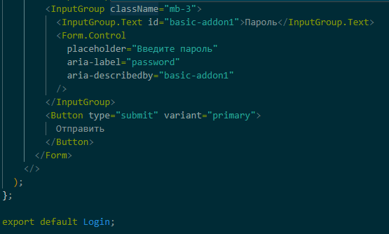

Ответ: Неконтролируемые компоненты действуют больше как традиционные элементы формы HTML. Данные для каждого элемента ввода хранятся в DOM, а не в компоненте. Вместо того, чтобы писать обработчик событий для всех ваших обновлений состояния, вы используете ref для получения значений из DOM.
В контролируемом компоненте данные формы обрабатываются состоянием внутри компонента. Состояние внутри компонента служит «единственным источником правды» для элементов ввода, которые отображаются компонентом. У управляемого компонента есть атрибут их текущего состояния и метод (колбэк), вызывающийся при их изменении. Контролируемые компоненты не требуют элемента формы, чтобы считаться контролируемым компонентом.
Ответ: Используя extend React.PureComponent, можно не добавлять метод жизненных циклов shouldComponentUpdate к компонентам: отслеживание изменений происходит само собой. PureComponent уже содержит в себе метод shouldComponentUpdate.
Ответ: Данный компонент не будет перерисовываться. Он является PureComponent, который реализует метод shouldComponentUpdate, который автоматически сравнивает предыдущие пропсы и состояние с новыми и решает, нужно ли производить перерисовку компонента. В данном случае, в методе render компонента не используются пропсы и компонент имеет только одно состояние - item, которое изменяется при клике по кнопке. Однако, так как изменение состояния происходит путем изменения существующего объекта, а не создания нового объекта, метод shouldComponentUpdate вернет false, и компонент не будет перерисовываться.
Ответ: Если в React чекбоксу не передано свойство 'checked', то по умолчанию чекбокс будет в неотмеченном состоянии. Это означает, что пользователь сможет отметить его, нажав на него, и в результате свойство 'checked' будет установлено в значение true.
Ответ: React.PureComponent изменяет метод жизненного цикла shouldComponentUpdate, автоматически проверяя, нужно ли заново отрисовывать компонент. При этом PureComponent будет вызывать рендер, только если обнаружит изменения в state или props компонента. Таким образом, сокращается количество рендеров в приложении, а значит и React производит намного меньше операций. Это и даёт плюс производительности.
Ответ: Если react компоненте input не будет передано значение value, то она будет отображать пустое поле ввода, а пользователь сможет ввести данные без ограничений. Если react компоненте input не будет передан метод onChange, то она будет отображать значение value, но пользователь не сможет вводить или изменять данные в поле ввода.
Ответ: Передайте multiple={true} в select, чтобы позволить пользователю выбрать несколько вариантов. А в value тега select передайте массив значений.
Ответ:


Ответ:

